<title>성·마을 장면 점검</title>
<meta name="claude:viewport-fit-sides" content="cover">
<link rel="stylesheet" href="https://fonts.googleapis.com/css2?family=Noto+Sans+KR:wght@400;600;700&display=swap">
<style>
/* 장면별 옛/새 네 컷 그리드, 위에 요약 */
:root{--bg:#f3f1ec;--fg:#23221f;--muted:#6b675e;--line:#d9d4c8;--card:#fbfaf7;--accent:#8a3b22;--font:"Noto Sans KR",system-ui,sans-serif}
@media (prefers-color-scheme:dark){:root:not([data-theme="light"]){--bg:#1b1a18;--fg:#ebe7de;--muted:#a39d90;--line:#3a3732;--card:#24221f;--accent:#e0896a;color-scheme:dark}}
:root[data-theme="dark"]{--bg:#1b1a18;--fg:#ebe7de;--muted:#a39d90;--line:#3a3732;--card:#24221f;--accent:#e0896a;color-scheme:dark}
body{background:var(--bg);color:var(--fg);font-family:var(--font);line-height:1.6;padding-block:24px 48px;padding-left:max(16px,env(safe-area-inset-left,0px));padding-right:max(16px,env(safe-area-inset-right,0px))}
main{max-width:1180px;margin:0 auto;display:flex;flex-direction:column;gap:28px}
h1{font-size:1.6rem;margin:0;text-wrap:balance} h2{font-size:1.15rem;margin:0 0 8px} h3{font-size:1rem;margin:0}
.lead{color:var(--muted);max-width:70ch;margin:6px 0 0}
ul{margin:0;padding-left:1.2em;max-width:80ch} li{margin:3px 0}
.scene{border-top:1px solid var(--line);padding-top:14px;display:flex;flex-direction:column;gap:8px}
.scene.key h3{color:var(--accent)}
.scene header{display:flex;gap:12px;align-items:baseline;flex-wrap:wrap}
.map{color:var(--muted);font-size:.85rem;font-family:ui-monospace,monospace}
.scene p{margin:0;max-width:80ch}
.grid{display:grid;grid-template-columns:repeat(4,minmax(0,1fr));gap:8px}
@media (max-width:760px){.grid{grid-template-columns:repeat(2,minmax(0,1fr))}}
figure{margin:0;display:flex;flex-direction:column;gap:4px} figure img{width:100%;border-radius:4px;background:#000}
figcaption{font-size:.8rem;color:var(--muted)}
.wide img{width:100%;border-radius:4px}
.yards{display:grid;grid-template-columns:2fr 1fr 1fr;gap:8px;align-items:end}
@media (max-width:760px){.yards{grid-template-columns:1fr}}
</style>
<main>
<div><h1>성·마을 장면 점검</h1><p class="lead">스토리 장면 29개와 대장간 이벤트를 지금 맵과 새 맵에 놓고 장면 시작·끝을 그렸습니다. 이름표는 장면 인물입니다. 위가 고친 주요 장면입니다.</p></div>
<div><h2>고친 것</h2><ul>
<li>장면 무대 지키기(towngen): 장면에서 사람이 서는 칸과 걷는 길, 그 앞(화면 아래) 네 칸에는 집·나무를 두지 않습니다. 그래도 사람을 가리는 물건은 화면 상자로 따져 치웁니다.</li>
<li>장면이 기대던 옛 집(사람 바로 뒤에 있던 집)은 그 자리에 지역 그림으로 되살립니다. 소패 3채, 평원 2채, 하비 2채, 하비 성안 1채.</li>
<li>사람들이 모여 선 곳은 네모 광장으로 깔고, 바닥은 옛 맵의 그 자리 바닥(허도·하비는 포석)을 따릅니다.</li>
<li>융중·단양은 원래 배치로 되돌리고 집만 지역 그림으로 바꿨습니다. 융중은 길가 나무를 솎았고, 단양은 절벽 위 숲과 둘레 울타리를 유지합니다.</li>
<li>대장간은 실내 대신 지역별 바깥 마당 맵 셋(화북·중원·회남)으로 바꿨습니다. 성 안 대장간 앞 출구가 마당으로 이어지고, 대장장이·견습공과 2장 청룡도·장팔사모 이벤트는 그대로입니다.</li>
<li>점검: 걷기 점검(탐험 순찰 지점 포함) 0건, 장면 동선·장면 데이터·탐험→장면 이음·장비 안내 테스트와 content·core 테스트 통과.</li>
</ul></div>
<div><h2>대장간 마당 (게임 화면)</h2><div class="wide">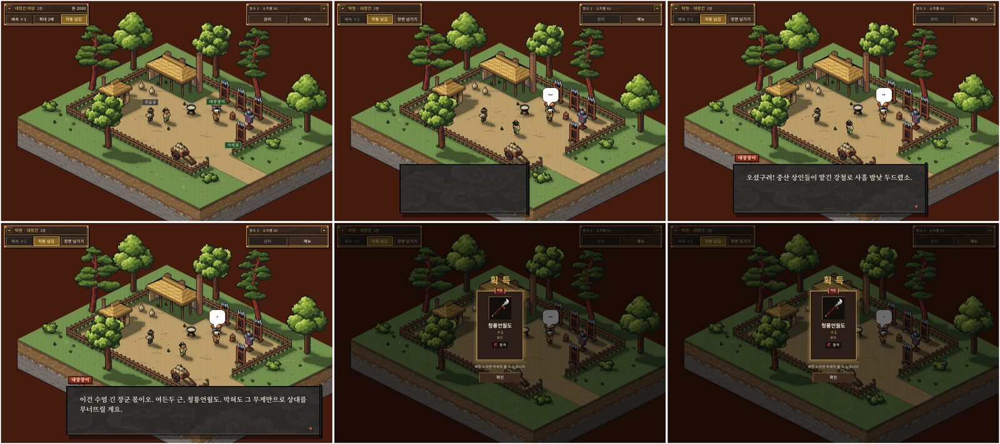</div>
<div class="yards" style="margin-top:8px"><figure>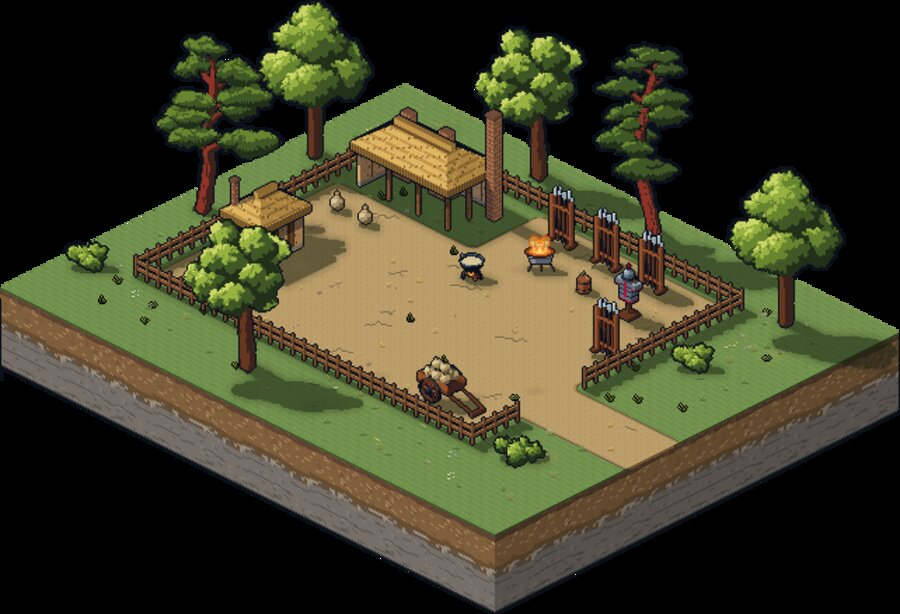<figcaption>화북 (탁현·평원·북해·업)</figcaption></figure><figure>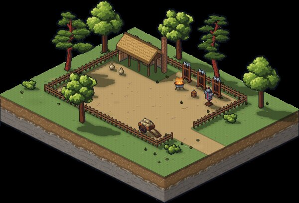<figcaption>중원 (허도)</figcaption></figure><figure>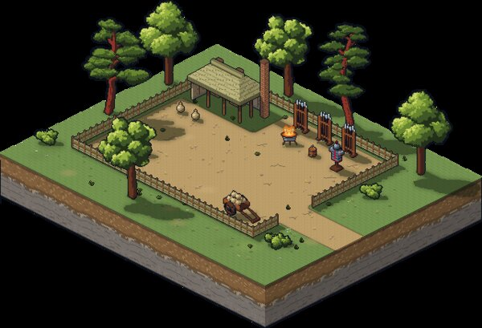<figcaption>회남 (서주·하비)</figcaption></figure></div></div>
<div><h2>남은 문제</h2><ul><li>평원 c08-p1: 관청 담장이 행인 한 명을 조금 가립니다(관청은 출구 건물이라 자동으로 치우지 않음).</li><li>게임 데이터에는 아직 반영하지 않았습니다. 미리보기 루트에만 있습니다.</li></ul></div>
<section class="scene key"><header><h3>c02-e-smith</h3><span class="map">S_weapon_shop → S_smithy_yard_huabei</span></header><p>대장간: 실내 → 바깥 마당. 좌표는 옛 실내와 같아 유비·대장장이 동선이 그대로.</p>
<div class="grid"><figure><figcaption>지금 · 시작</figcaption></figure><figure><figcaption>새 맵 · 시작</figcaption></figure><figure>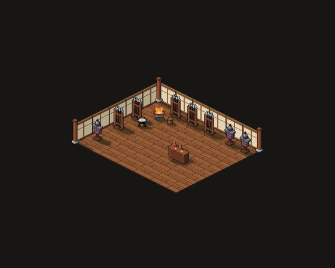<figcaption>지금 · 끝</figcaption></figure><figure>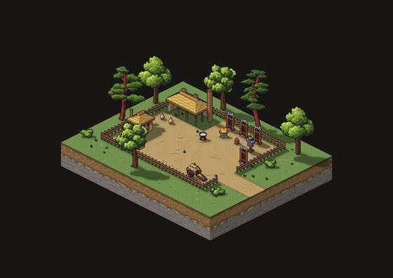<figcaption>새 맵 · 끝</figcaption></figure></div></section><section class="scene key"><header><h3>c24-cottage3</h3><span class="map">S_vil_peace</span></header><p>융중을 원래 배치로 되돌림. 초려 앞에 제갈량이 서고 집 셋은 회남 초가로. 길가 나무 11그루를 치움.</p>
<div class="grid"><figure>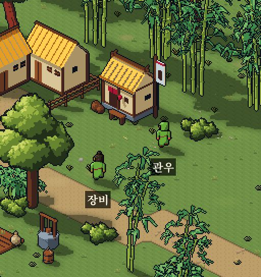<figcaption>지금 · 시작</figcaption></figure><figure>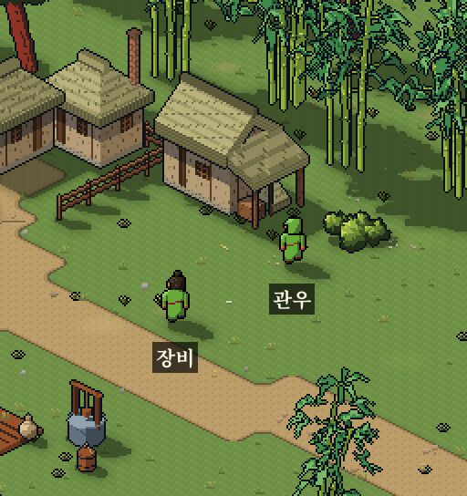<figcaption>새 맵 · 시작</figcaption></figure><figure>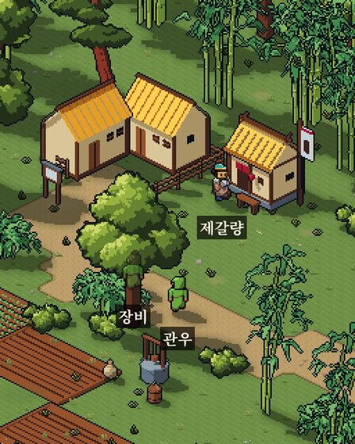<figcaption>지금 · 끝</figcaption></figure><figure>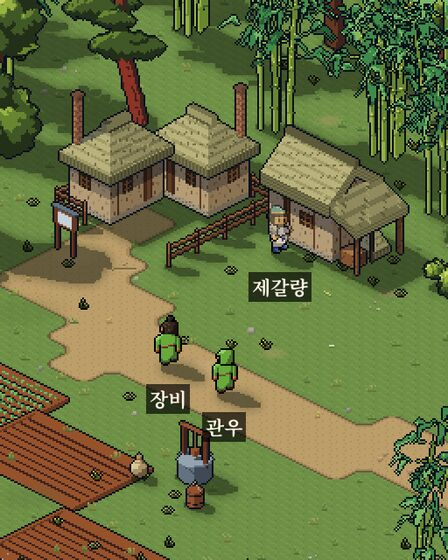<figcaption>새 맵 · 끝</figcaption></figure></div></section><section class="scene key"><header><h3>c23-visit1</h3><span class="map">S_vil_peace</span></header><p>융중 첫 방문. 원래 길·밭·우물 자리 그대로.</p>
<div class="grid"><figure>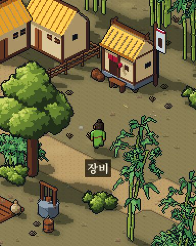<figcaption>지금 · 시작</figcaption></figure><figure>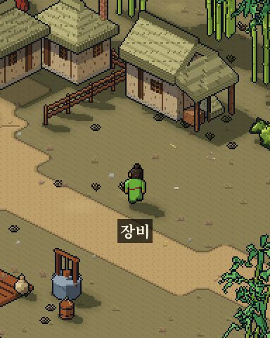<figcaption>새 맵 · 시작</figcaption></figure><figure>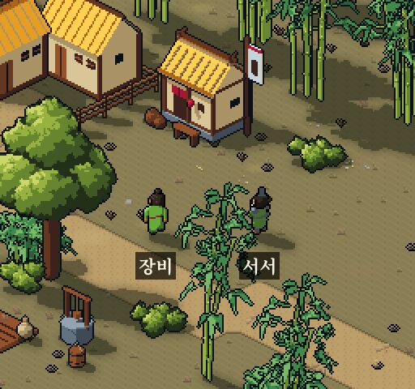<figcaption>지금 · 끝</figcaption></figure><figure>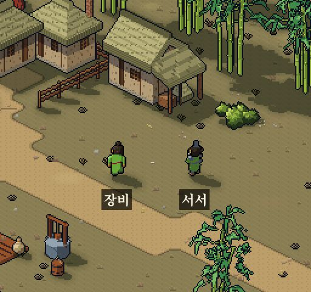<figcaption>새 맵 · 끝</figcaption></figure></div></section><section class="scene key"><header><h3>c23-visit2</h3><span class="map">S_vil_peace</span></header><p>융중 두 번째 방문.</p>
<div class="grid"><figure>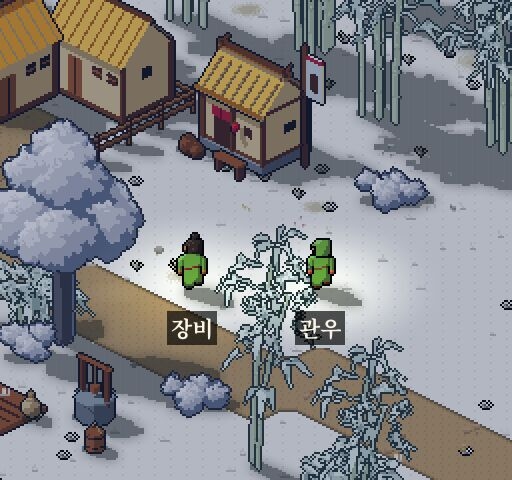<figcaption>지금 · 시작</figcaption></figure><figure>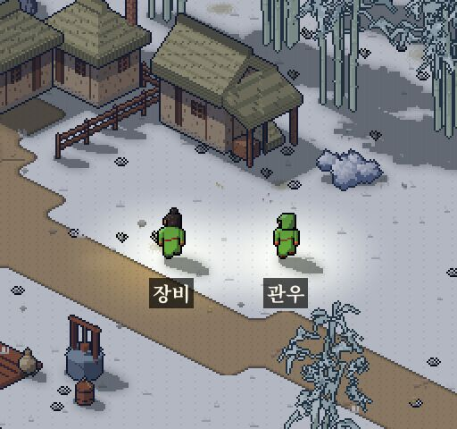<figcaption>새 맵 · 시작</figcaption></figure><figure><figcaption>지금 · 끝</figcaption></figure><figure><figcaption>새 맵 · 끝</figcaption></figure></div></section><section class="scene key"><header><h3>c04-start</h3><span class="map">S_danyang_village</span></header><p>단양을 원래 배치로 되돌림(절벽·큰 나무·우물). 사람을 가리던 앞 집 하나와 울타리 조각을 치움. 도겸 무리가 들어오는 길도 열림.</p>
<div class="grid"><figure>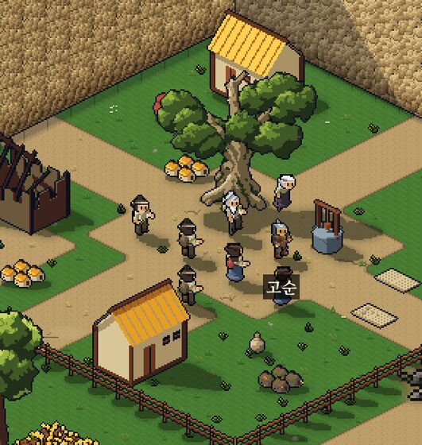<figcaption>지금 · 시작</figcaption></figure><figure>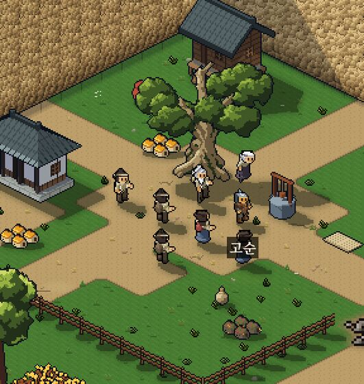<figcaption>새 맵 · 시작</figcaption></figure><figure>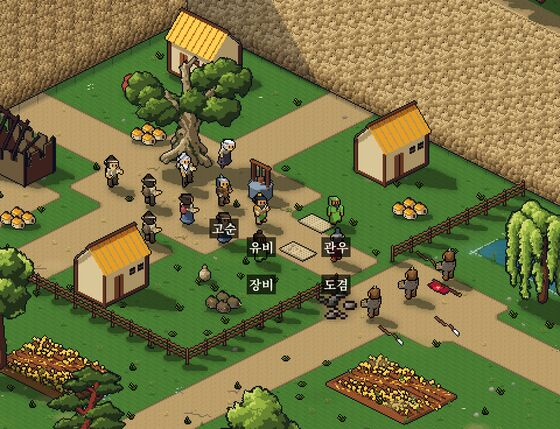<figcaption>지금 · 끝</figcaption></figure><figure>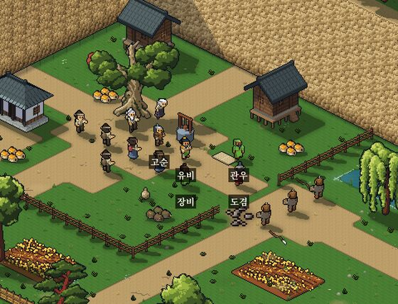<figcaption>새 맵 · 끝</figcaption></figure></div></section><section class="scene key"><header><h3>c13-farewell</h3><span class="map">S_xiaopei</span></header><p>소패 작별. 옛 맵에서 장면 뒤에 있던 집 셋을 그 자리에 회남 그림으로 되살림. 사람들이 선 곳은 흙 광장.</p>
<div class="grid"><figure>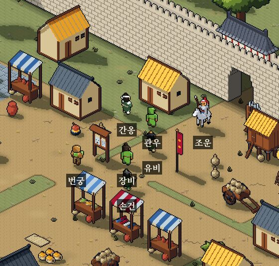<figcaption>지금 · 시작</figcaption></figure><figure>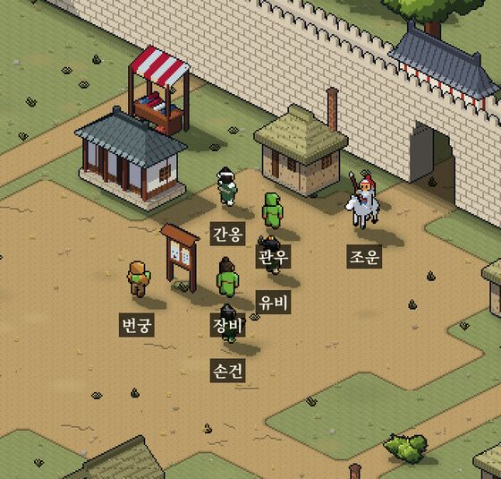<figcaption>새 맵 · 시작</figcaption></figure><figure>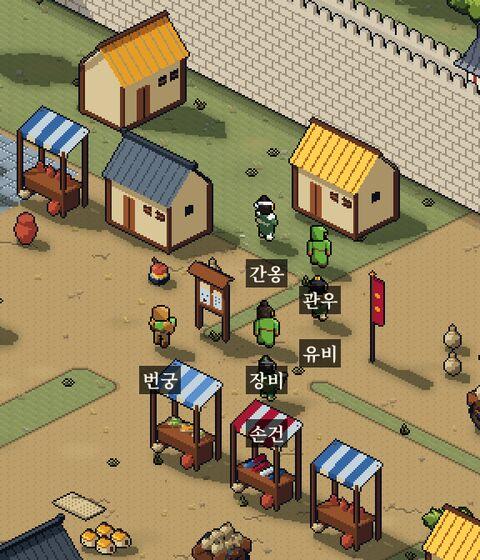<figcaption>지금 · 끝</figcaption></figure><figure>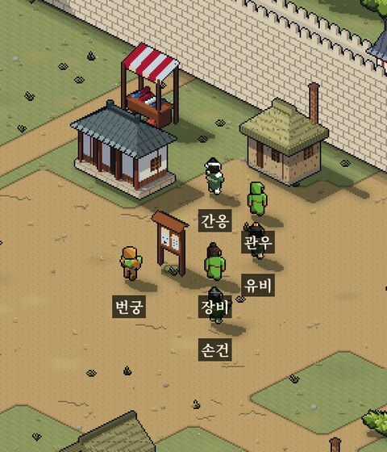<figcaption>새 맵 · 끝</figcaption></figure></div></section><section class="scene key"><header><h3>c25-flash1</h3><span class="map">S_xiapi</span></header><p>하비 관청 앞 회상. 관청 자리에 집을 되살리고 옛 맵처럼 돌 포석 광장.</p>
<div class="grid"><figure>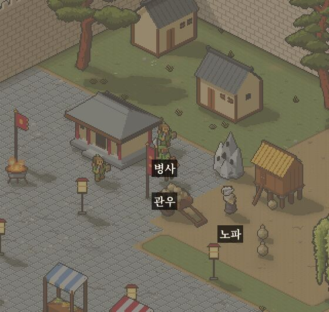<figcaption>지금 · 시작</figcaption></figure><figure>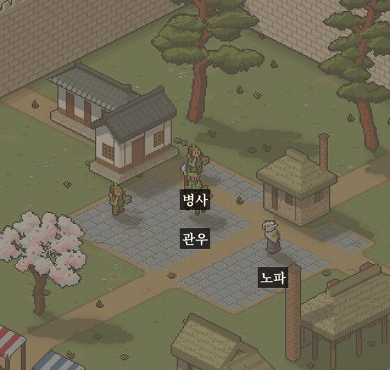<figcaption>새 맵 · 시작</figcaption></figure><figure>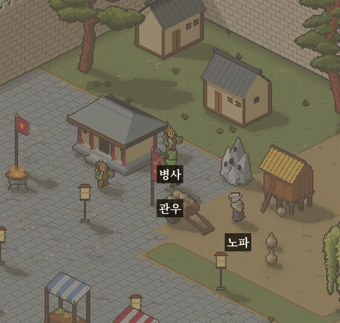<figcaption>지금 · 끝</figcaption></figure><figure><figcaption>새 맵 · 끝</figcaption></figure></div></section><section class="scene key"><header><h3>c14-e-sword</h3><span class="map">S_xuzhou_town</span></header><p>서주 미축 집 앞. 전에는 지붕 밑에 사람이 겹쳤는데 앞을 비우고 흙 광장으로.</p>
<div class="grid"><figure>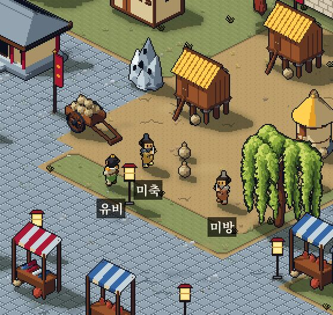<figcaption>지금 · 시작</figcaption></figure><figure><figcaption>새 맵 · 시작</figcaption></figure><figure><figcaption>지금 · 끝</figcaption></figure><figure>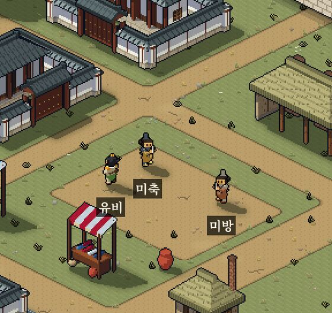<figcaption>새 맵 · 끝</figcaption></figure></div></section><section class="scene key"><header><h3>c17-death</h3><span class="map">S_xudu</span></header><p>허도 궁 앞. 옛 맵처럼 돌 포석 광장.</p>
<div class="grid"><figure>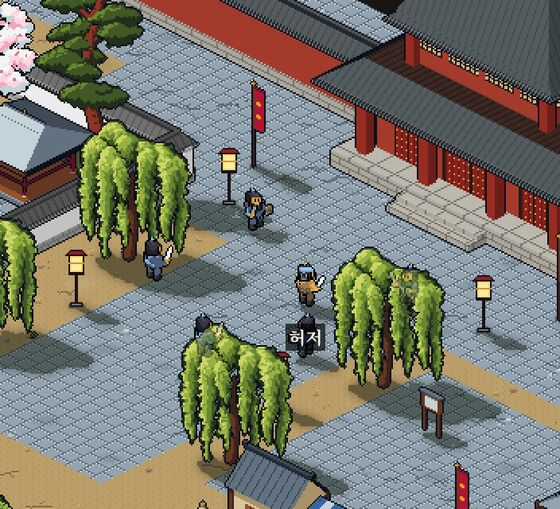<figcaption>지금 · 시작</figcaption></figure><figure>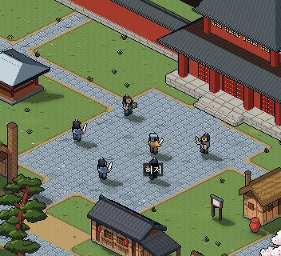<figcaption>새 맵 · 시작</figcaption></figure><figure>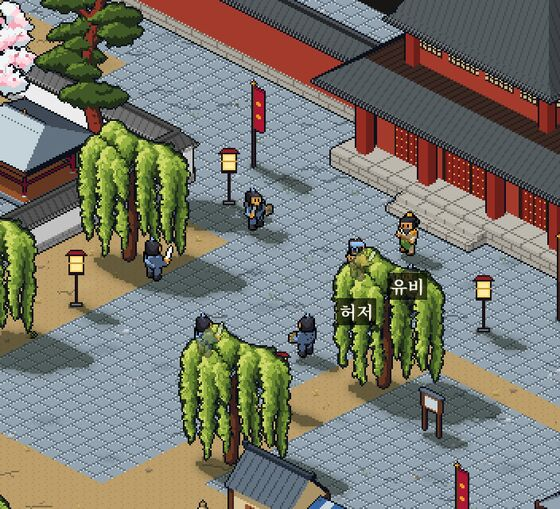<figcaption>지금 · 끝</figcaption></figure><figure>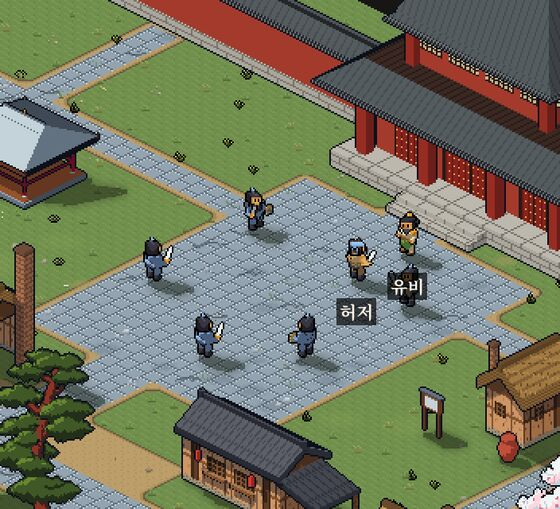<figcaption>새 맵 · 끝</figcaption></figure></div></section><section class="scene key"><header><h3>c08-p1</h3><span class="map">S_pingyuan</span></header><p>평원. 순찰 길을 막던 집·나무를 비킴. 관청 담장이 한 사람을 조금 가림(남은 문제).</p>
<div class="grid"><figure><figcaption>지금 · 시작</figcaption></figure><figure><figcaption>새 맵 · 시작</figcaption></figure><figure>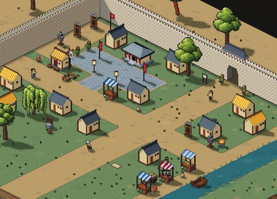<figcaption>지금 · 끝</figcaption></figure><figure>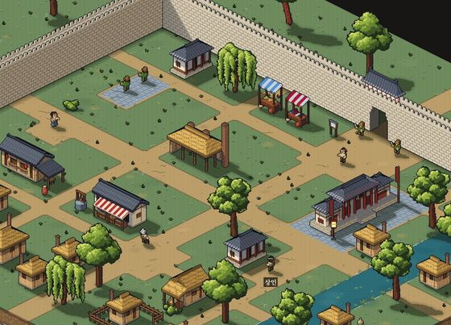<figcaption>새 맵 · 끝</figcaption></figure></div></section><section class="scene key"><header><h3>c24-street</h3><span class="map">S_xiaopei</span></header><p>소패 거리. 성문 앞 광장과 뒤쪽 집.</p>
<div class="grid"><figure>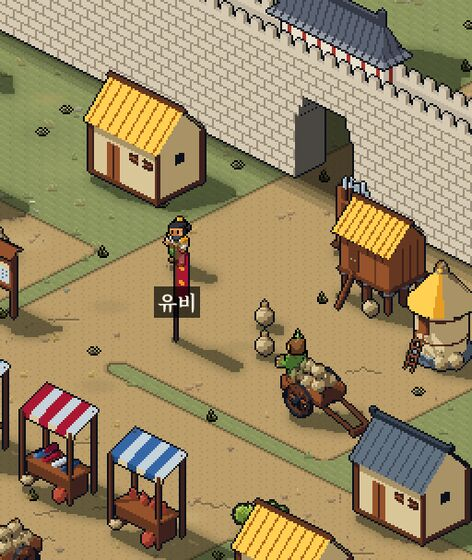<figcaption>지금 · 시작</figcaption></figure><figure>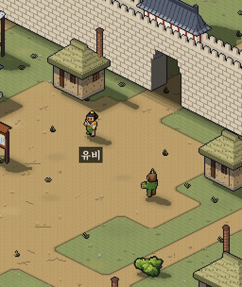<figcaption>새 맵 · 시작</figcaption></figure><figure>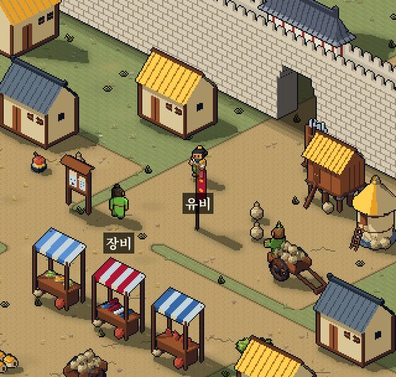<figcaption>지금 · 끝</figcaption></figure><figure>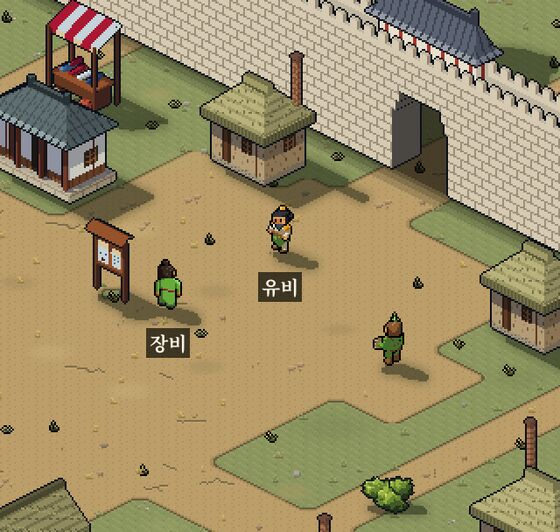<figcaption>새 맵 · 끝</figcaption></figure></div></section><section class="scene"><header><h3>c01-e-notice</h3><span class="map">S_zhuo</span></header>
<div class="grid"><figure>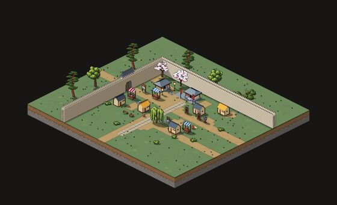<figcaption>지금 · 시작</figcaption></figure><figure><figcaption>새 맵 · 시작</figcaption></figure><figure><figcaption>지금 · 끝</figcaption></figure><figure>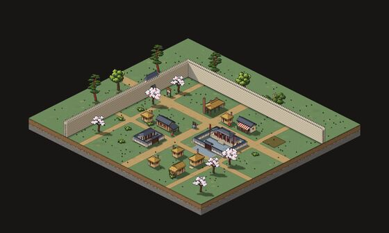<figcaption>새 맵 · 끝</figcaption></figure></div></section><section class="scene"><header><h3>c05-e-elder</h3><span class="map">S_road_town</span></header>
<div class="grid"><figure>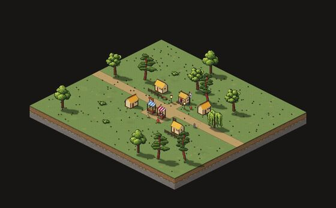<figcaption>지금 · 시작</figcaption></figure><figure><figcaption>새 맵 · 시작</figcaption></figure><figure><figcaption>지금 · 끝</figcaption></figure><figure>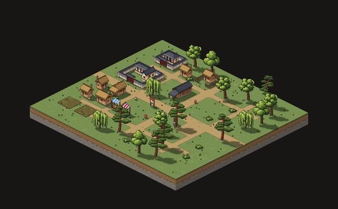<figcaption>새 맵 · 끝</figcaption></figure></div></section><section class="scene"><header><h3>c05-e-town</h3><span class="map">S_road_town</span></header>
<div class="grid"><figure>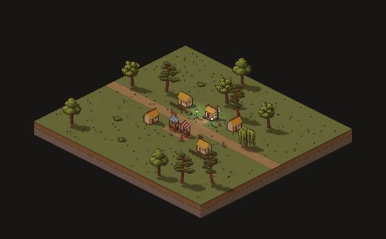<figcaption>지금 · 시작</figcaption></figure><figure>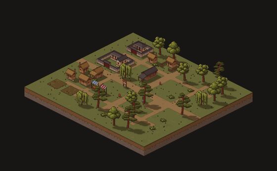<figcaption>새 맵 · 시작</figcaption></figure><figure>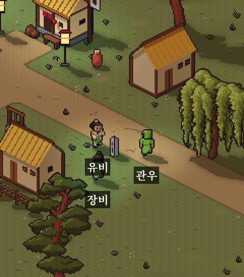<figcaption>지금 · 끝</figcaption></figure><figure>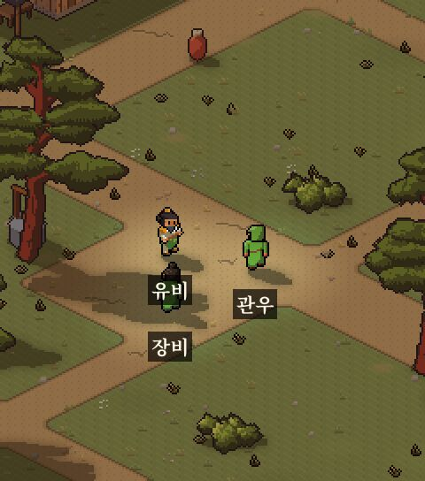<figcaption>새 맵 · 끝</figcaption></figure></div></section><section class="scene"><header><h3>c09-12</h3><span class="map">S_xindu</span></header>
<div class="grid"><figure><figcaption>지금 · 시작</figcaption></figure><figure><figcaption>새 맵 · 시작</figcaption></figure><figure>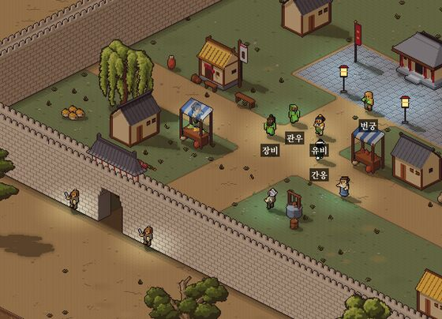<figcaption>지금 · 끝</figcaption></figure><figure>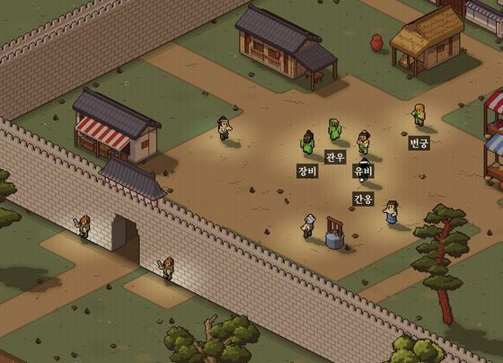<figcaption>새 맵 · 끝</figcaption></figure></div></section><section class="scene"><header><h3>c09-start</h3><span class="map">S_xindu</span></header>
<div class="grid"><figure>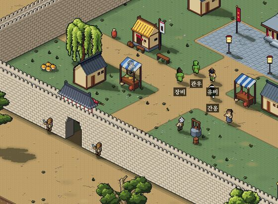<figcaption>지금 · 시작</figcaption></figure><figure><figcaption>새 맵 · 시작</figcaption></figure><figure><figcaption>지금 · 끝</figcaption></figure><figure><figcaption>새 맵 · 끝</figcaption></figure></div></section><section class="scene"><header><h3>c13-e-merchant</h3><span class="map">S_xiaopei</span></header>
<div class="grid"><figure><figcaption>지금 · 시작</figcaption></figure><figure><figcaption>새 맵 · 시작</figcaption></figure><figure><figcaption>지금 · 끝</figcaption></figure><figure><figcaption>새 맵 · 끝</figcaption></figure></div></section><section class="scene"><header><h3>c13-e-woman</h3><span class="map">S_xiaopei</span></header>
<div class="grid"><figure><figcaption>지금 · 시작</figcaption></figure><figure><figcaption>새 맵 · 시작</figcaption></figure><figure><figcaption>지금 · 끝</figcaption></figure><figure><figcaption>새 맵 · 끝</figcaption></figure></div></section><section class="scene"><header><h3>c13-gate</h3><span class="map">S_xuzhou_gate</span></header>
<div class="grid"><figure><figcaption>지금 · 시작</figcaption></figure><figure><figcaption>새 맵 · 시작</figcaption></figure><figure><figcaption>지금 · 끝</figcaption></figure><figure><figcaption>새 맵 · 끝</figcaption></figure></div></section><section class="scene"><header><h3>c14-gate</h3><span class="map">S_xuzhou_gate</span></header>
<div class="grid"><figure><figcaption>지금 · 시작</figcaption></figure><figure><figcaption>새 맵 · 시작</figcaption></figure><figure><figcaption>지금 · 끝</figcaption></figure><figure><figcaption>새 맵 · 끝</figcaption></figure></div></section><section class="scene"><header><h3>c16-inner</h3><span class="map">S_xiapi_inner</span></header>
<div class="grid"><figure><figcaption>지금 · 시작</figcaption></figure><figure><figcaption>새 맵 · 시작</figcaption></figure><figure><figcaption>지금 · 끝</figcaption></figure><figure><figcaption>새 맵 · 끝</figcaption></figure></div></section><section class="scene"><header><h3>c19-mangdang</h3><span class="map">S_mangdang</span></header>
<div class="grid"><figure><figcaption>지금 · 시작</figcaption></figure><figure><figcaption>새 맵 · 시작</figcaption></figure><figure><figcaption>지금 · 끝</figcaption></figure><figure><figcaption>새 맵 · 끝</figcaption></figure></div></section><section class="scene"><header><h3>c20-alarm</h3><span class="map">S_mangdang</span></header>
<div class="grid"><figure><figcaption>지금 · 시작</figcaption></figure><figure><figcaption>새 맵 · 시작</figcaption></figure><figure><figcaption>지금 · 끝</figcaption></figure><figure><figcaption>새 맵 · 끝</figcaption></figure></div></section><section class="scene"><header><h3>c20-reunion</h3><span class="map">S_mangdang</span></header>
<div class="grid"><figure><figcaption>지금 · 시작</figcaption></figure><figure><figcaption>새 맵 · 시작</figcaption></figure><figure><figcaption>지금 · 끝</figcaption></figure><figure><figcaption>새 맵 · 끝</figcaption></figure></div></section><section class="scene"><header><h3>c21-arrival</h3><span class="map">S_runan</span></header>
<div class="grid"><figure><figcaption>지금 · 시작</figcaption></figure><figure><figcaption>새 맵 · 시작</figcaption></figure><figure><figcaption>지금 · 끝</figcaption></figure><figure><figcaption>새 맵 · 끝</figcaption></figure></div></section><section class="scene"><header><h3>c21-gate</h3><span class="map">S_runan</span></header>
<div class="grid"><figure><figcaption>지금 · 시작</figcaption></figure><figure><figcaption>새 맵 · 시작</figcaption></figure><figure><figcaption>지금 · 끝</figcaption></figure><figure><figcaption>새 맵 · 끝</figcaption></figure></div></section><section class="scene"><header><h3>c23-gate</h3><span class="map">S_xuzhou_gate</span></header>
<div class="grid"><figure><figcaption>지금 · 시작</figcaption></figure><figure><figcaption>새 맵 · 시작</figcaption></figure><figure><figcaption>지금 · 끝</figcaption></figure><figure><figcaption>새 맵 · 끝</figcaption></figure></div></section><section class="scene"><header><h3>c23-market</h3><span class="map">S_xiaopei</span></header>
<div class="grid"><figure><figcaption>지금 · 시작</figcaption></figure><figure><figcaption>새 맵 · 시작</figcaption></figure><figure><figcaption>지금 · 끝</figcaption></figure><figure><figcaption>새 맵 · 끝</figcaption></figure></div></section><section class="scene"><header><h3>c25-night</h3><span class="map">S_xinye_town</span></header>
<div class="grid"><figure><figcaption>지금 · 시작</figcaption></figure><figure><figcaption>새 맵 · 시작</figcaption></figure><figure><figcaption>지금 · 끝</figcaption></figure><figure><figcaption>새 맵 · 끝</figcaption></figure></div></section><section class="scene"><header><h3>c27-arrive</h3><span class="map">S_jiangxia_harbor</span></header>
<div class="grid"><figure><figcaption>지금 · 시작</figcaption></figure><figure><figcaption>새 맵 · 시작</figcaption></figure><figure><figcaption>지금 · 끝</figcaption></figure><figure><figcaption>새 맵 · 끝</figcaption></figure></div></section>
</main>